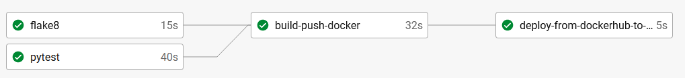
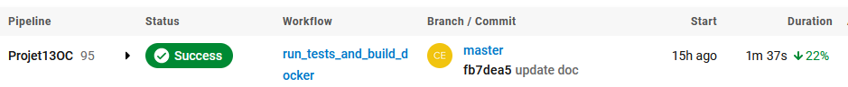
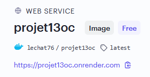
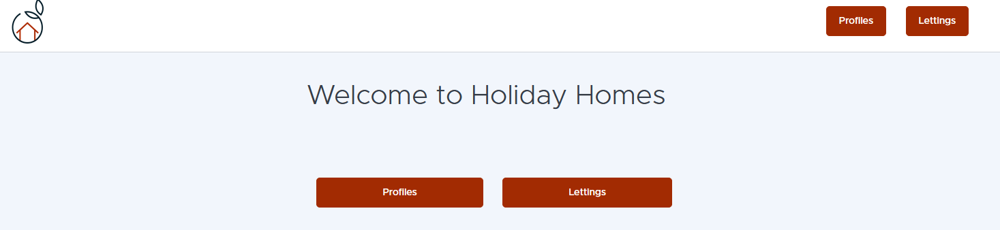

CI/CD Pipeline
When a modification is done on the Github repository (after a commit), CircleCi launch some commands:
Pytest: a list of tests are launched to check if the code is stable
note : you can manualy launch this command, from root folder of the application (where is located the manage.py file) and with virtual environment activated
pytest --nomigrations --disable-warnings
Flake8: this module test if good practice of linting is respected
note : you can manualy launch this command, from root folder of the application (where is located the manage.py file) and with virtual environment activated
flake8
if those 2 steps are clear, image is built and pushed to Docker Hub
note you can manually push the image to Docker Hub (you should have the image already created in Docker Desktop)
First : tag the image
docker tag lechat76/projet13oc lechat76/projet13ocThen : deploy on Docker Hub
docker push lechat76/projet13oc
if image is well pushed, CircleCi launch Render importing image
note : you can manually deploy the Docher Hub image by accessing to the deploy hook url
https://api.render.com/deploy/srv-cknpo7hrfc9c73ec4tug?key=MMvbtjc23UA
After all those steps, web site will be reachable (Render launch automaticaly web server service)
  